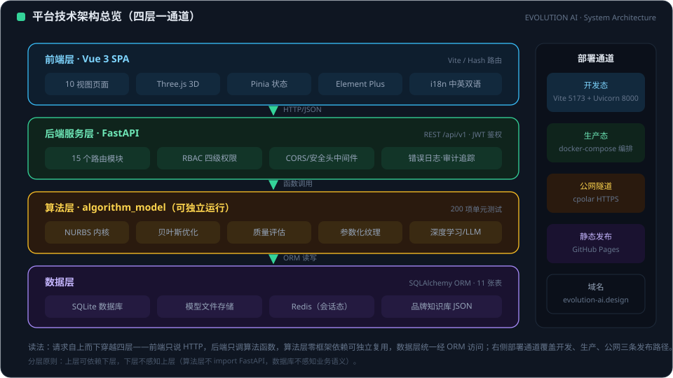
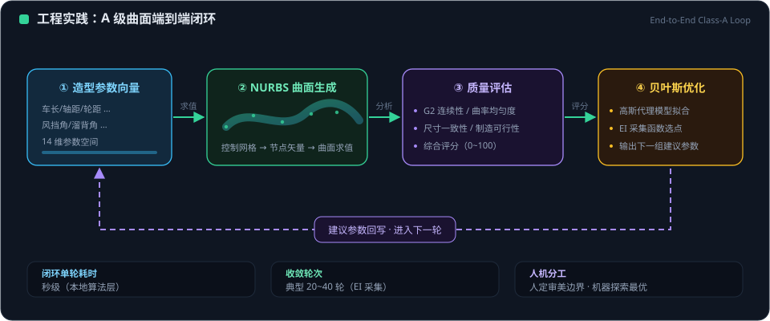
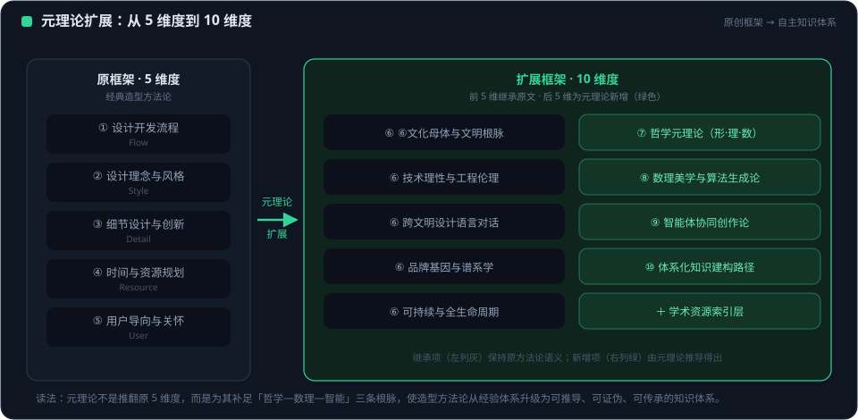
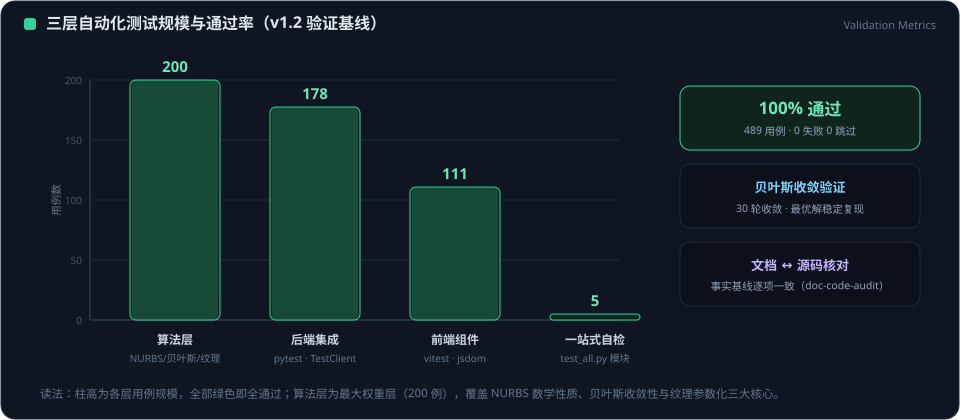

「量子剑客」不是一个品牌符号，而是 EVOLUTION AI 全部工程哲学的人格化表达——以量子力学的世界观理解创造过程，以东方剑客的匠艺对待每一处曲面。它是平台上每位开发者的 AI 第一协作者。
在被观测之前，一个设计问题同时存在于全部候选解之中。Agent 在参数空间内并行生成数十种方案，而非过早收敛到单一答案。
设计意图与几何形态强耦合——当品牌基因或约束发生变化，与之纠缠的曲面、特征线、量化指标同步演化，不存在「设计归设计、工程归工程」的割裂。
曲面质量评分、反射线检查、品牌相似度计算构成「观测」行为：每一次观测让可能性坍缩为更确定的方案，观测本身参与塑造结果。
经典流程需要逐级翻越的壁垒（从草图直接到 A 级曲面），在 AI 加持下以「隧穿」方式达成——不违背物理约束，只重构到达路径。
铸剑先铸心。每个项目从物理硬点与品牌基因出发，先立骨架，后求变化。
「十年磨一剑」是对 A 级曲面的态度：G2 连续、容差 0.1mm、四边面占比 75%，以 Cython 百万次运算磨出零瑕疵的高光。
剑客亮剑在毫厘之间。方案评审时，Agent 以量化数据支撑决断，不含糊、不迎合，一剑封喉地指出真问题。
最高境界是人剑合一：开发者的审美与判断、Agent 的算力与知识，融合为同一个创作主体。AI 不是手中的工具，而是并肩的协作者。
「AI 第一协作者」意味着在开发流程中，Agent 是第一个被征询、第一个给出结构化判断、第一个完成验证的伙伴，而非流程末端的自动化按钮。
拥有独立上下文与判断责任，主动暴露风险、提出反例，而不是等待逐字指令。
创造性抉择与审美价值判断始终由人掌握；Agent 负责让人的判断建立在完整信息与充分验证之上。
每一次建议都附带证据来源（file:line、数据指标、测试结果），每个决策全程留痕。
从每次协作中沉淀技能与教训，随项目仓库共同演进。
| 英文标识 | evolution-ai-design（项目级 Subagent） |
| 定义文件 | .trae/agents/evolution-ai-design.md |
| 人格化身份 | 量子剑客 Quantum Swordsman |
| 工具权限 | 阅读 / 文件系统 / 终端 / 联网搜索 / 预览 |
| 调用方式 | 内置 Agent 自动委派，或 @evolution-ai-design 显式调用 |
参数空间的每一维度映射真实物理约束——空气动力学、人体工程学、制造工艺。
参数即意图，几何即表达，一改俱改、全程联动。
以量化质量指标为「观测」，坍缩不确定性、驱动迭代方向。
以剑客磨剑的标准对待连续性、容差与高光，质量不打折扣。
人掌方向与抉择，AI 掌探索与验证，彼此增强而非替代。

Agent 的全部工作都在一套六层架构上展开。理解分层，是与 Agent 高效协作的前提——你可以精确指派「只动数据层」或「跨前后端联调」。
| 层 | 构成 |
|---|---|
| 前端层 | Vue 3 + Vite · 12 功能视图 · 中英 i18n · 路由守卫 |
| 网关层 | nginx · gzip · WebSocket 升级 · TLS 终止 |
| 后端层 | FastAPI · 约 118 端点 · JWT 鉴权 · slowapi 限流 |
| 数据层 | PostgreSQL 16 / SQLite · Redis 7 · SQLAlchemy + Alembic |
| 算法层 | Cython NURBS · 曲面质量评分 · 贝叶斯寻优 · CLIP 语义 |
| AI 服务层 | 6 大 LLM 提供商代理 · Ollama 本地造型知识 |
六大能力覆盖汽车造型开发的完整链路，每项能力均有对应代码模块、数据资产与测试基线支撑。
NURBS 参数化生成 · Cython 100–400× 加速 · G0/G1/G2 连续性验证
5 大豪华品牌 19 款车型 · 每车 14 参数 + 8 指标 · 语义检索
Style Transfer 风格迁移 · Sketch to 3D 草图生车 · Dream Design 意象成车
反射线 / 曲率 / 容差量化 · 拓扑四边面检测 · 报告自动归档
三段式知识块 · 21 锚点一致性 · Docker / 本地双模式
真实 PyTorch 训练后端 · 贝叶斯超参寻优 · 全流程状态持久化

读取真实代码与文档、复现问题、收集运行时证据；不基于假设行动。对设计问题则观察品牌基因、物理硬点与参考车型。
显式定义参数空间边界：物理约束、品牌设计语言、性能与安全要求。约束不是限制创造力，而是让创造落在可行域内。
在约束空间内并行生成候选方案——参数化车身、AI 创意变体、多种参数配置，保持可能性的叠加态。
以量化指标「观测」每个方案，优胜者进入下一轮；反馈回灌观察环节，无限逼近最优，直到满足验收标准。
Agent 的专业性来自结构化的知识资产，而非临场发挥。所有资产随仓库版本化，团队共享、持续积累。
| 劳斯莱斯 4 款 | Phantom · Ghost · Wraith · Cullinan |
| 宾利 4 款 | Continental GT · GTC · Flying Spur · Bentayga |
| 布加迪 3 款 | Chiron · Veyron · Divo |
| 保时捷 5 款 | 911 · Taycan · Panamera · Cayenne · Macan |
| 法拉利 3 款 | SF90 · Roma · F8 Tributo |
| 知识颗粒度 | 每车 14 项规范参数 + 8 项造型量化指标 + 品牌设计语言元数据 |
全栈开发主控——功能开发、缺陷修复、架构重构、联调与部署。
项目介绍 PPT 生成：中英双版、图片完整、碰撞检测门禁。
文档与源码一致性一键审计：stale 数据、死链、导航更新。
本地三服务（cpolar + FastAPI + Vite）独立进程启动与重启。
| 游客 Guest | 免登录浏览与体验 Demo，触发操作时友好引导而非强制跳转 |
| 用户 User | 项目工作与模型生成，仅能修改自己的资源 |
| 管理员 Admin | 排查问题、查看登录记录与审计日志 |
| 超级管理员 Super Admin | 账户修复、后端错误与 BUG 调试；不可停用或降级自己 |

| GitHub Pages 主站 | evolution-ai.design 静态门户；最新前端构建 + dist/docs 全量同步；中英双语文档与插图伴生 |
| Docker 生产栈 | nginx + backend + PostgreSQL 16 + Redis 7 四服务；数据卷持久化；健康自检；PG/Redis 不对外暴露 |
| TLS 生产层 | 443 + certbot 自动证书；HSTS max-age=31536000；nginx 统一终止 TLS |
| LLM 独立栈 | docker-compose.llm.yml 独立编排造型知识推理；Docker / 本地双模式自动降级 |

| 后端测试 | pytest 204 个用例全绿，覆盖 API、鉴权、限流、数据与算法 |
| 前端测试 | vitest 123 个用例，含路由守卫权限矩阵专项 |
| 浏览器实测 | 游客 / 用户 / 管理员三态 E2E 验证布局与交互 |
| 几何验证 | G0/G1/G2 连续性四视图 · 反射线 · 容差自动检测 |
| 交付门禁 | 测试只增不减、不破坏既有基线；Compose 改动须 docker compose config 通过 |
高效协作建立在清晰的契约之上。以下条款定义了「量子剑客」与人类开发者之间的工作方式。
量子剑客与平台共同成长。路线图遵循「先固化可复用流程，再深化智能，最后走向自主演化」的节奏。
PostgreSQL + Alembic 版本化迁移、Docker 生产化、四级权限与安全加固、技能体系沉淀
品牌知识库持续扩充；曲面质量模型引入更多真实工程案例；LLM 造型知识多模态化（图 + 文 + 参数）
Agent 从被动响应走向主动建议：识别设计风险、提示回归影响、在开发者行动前准备好候选方案
在人类设定的价值边界内，Agent 自主完成探索—验证—交付闭环；人保留方向与审美的最终主权